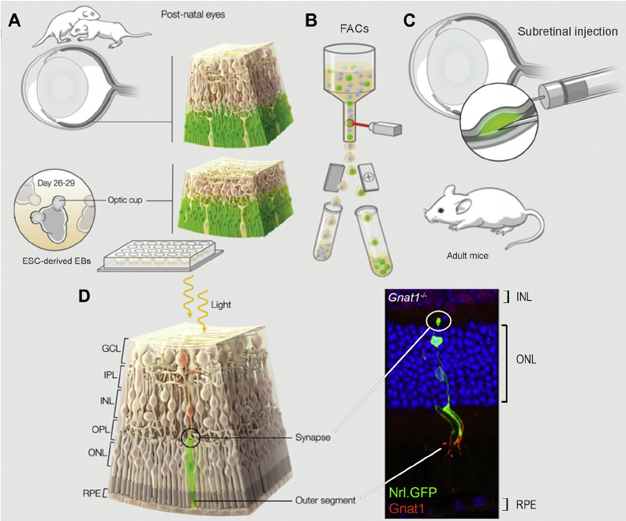

The eyes are a fascinating part of our anatomy that allows us to perceive our world in an incredible way. Based on the different ways in which light bounces off of materials our eyes are able to interpret the world into color, texture and contrast. They are amazingly complex with a lot of varying parts having specific functions. The eye is comprised of, in order moving from the front of the face into the head, conjunctiva, cornea, aqueous humor, iris/pupil, lens, vitreous humor, retina, fovea, choroid, and surrounding the eye everywhere but the cornea is the sclera. This is just a basic rendition of the tons of different items found within the eye. Each has its own function that helps the eye to operate successfully.
The retina is what this paper will focus on, and more specifically the rod cells located within the retina. The retina is the back layer of the eye, having only the choroid and the sclera further behind. It is the actual perceiving mechanism of the eye as it is able to discern, through rods and cones, information any light that enters the eye shares with it. The rods and cones are spread out over the retina very differently. There are a lot more rod cells than cones (about 95% or 120 million of photoreceptors are rods) and they are spread throughout the superior and anterior sections of the retina, with the concentration drastically reduced in the fovea.
The light that enters into the eye is mainly picked up by the rod cells, which tell us all about how bright the world is. The rod cell consists of dendrites, which is the head of the cell, the soma containing the nucleus, the axon and terminals that connect to the bipolar or horizontal cells and indirectly with the ganglion cells and to the neural pathways in the brain. It has pigment discs stacked all the way through the dendrite that are a part of the light sensing process. When light hits one of the rod photoreceptors the chemical rhodopsin, found in the membrane, will break down very quickly and stop the sodium channels that are placed throughout the rod cell actually turning the cell “off” and starting the process by which we are able to see, called the phototransduction cascade. Once it is turned off the bipolar cell that is connected to the end of the rod photoreceptor is allowed to send the signal that it is continuously attempting to emit to the brain through the ganglion cells. This means that in the dark the rod cell acts as an inhibitor that continuously prevents the bipolar cell from sending its signal to the brain but once light hits the rod cell and the rhodopsin is destroyed there is nothing left to inhibit the bipolar cell and it sends its signal. There are also horizontal cells that connect the rod cells to each other. These horizontal cells are basically another type of bipolar cell but allows the rods to communicate with each other insuring the cell that picks up light, even weak light, sends a strong signal to the brain. Without this communication no line would be defined and everything would meld together.
When looking at the complex nature of the eye it becomes evident that the most important part of translating what we see into perceivable images in the brain was the photoreceptors. To further narrow down the field I decided to single out the rod photoreceptors as they are the majority of what is found in the eye and are what primarily allows us to interpret light. I wanted to look for relevance or real world applications that the rod photoreceptor specifically could have on our personal lives and the obvious answer is that it affects our ability to perceive the world; we notice it in its absence.
Photoreceptor Degeneration
Photoreceptor degeneration is a main cause for the loss of sight and can happen as the result of many different forms of diseases under the category name retinitis pigmentosa. Within these different types of diseases consist differing types of degeneration that will create many microenvironments within the eye. These environments affect the rate at which the photoreceptor layer degenerates but are not all consistent as the diseases mature. The effect of this will be shown later. Photoreceptor death, however, does not have to be attributed to diseases. It is a common process that the eye undergoes as it ages and so is applicable to many of us as we grow older.
To create a viable cure for those who suffer from these eye disorders, studies have been conducted on retinitis pigmentosa affected mice. These studies involve transplanting photoreceptors from another healthy mouse to the sub-retinal space of the diseased mouse. This is where the different layers of the retina become important. In the retina, the ganglion, horizontal and bipolar cells are all placed in front of the photoreceptors, closest to the vitreous humor. This means that the photoreceptor heads are facing towards the brain and closer to the sclera, receiving light only after it has passed through the entire eye and the layers of neural cells. The retina is further divided into different layers; in this paper we will discuss the:
- sub-retinal layer
- OS
- OLM
- ONL
- INL
There are more but for our purposes they are not as relevant.
The sub-retinal space is just between the sclera and the retina, and is basically found in the OS (outer segment), which hosts the head of the photoreceptors. This space is the closest to the back of the eye and is the location of where the photoreceptors will be injected. The ONL (outer nuclear layer) is the site at which the rod photoreceptors’ body is located and which the injected cells will need to settle into in order to successfully assimilate. The OLM is the outer limiting membrane on the edge of the ONL separating it from the OS and is formed by adherens junctions between the glial cells and photoreceptors acting as a barrier that the injected photoreceptors have to go through before they can integrate. The last section is the INL (inner nuclear layer), which holds all of the bipolar and horizontal cells that the rods need to make a connection to.

Because they are in the last layer of the retina, placing the transplanted cells sub-retinally locates them in the area of closest proximity to the affected rods, however they still need to go through the OLM in order to integrate themselves within the ONL and make connections to the INL. When transplanting there are a multitude of different factors that affect the outcome of how many rod photoreceptor cells actually successfully integrate within the new host. To identify, explore, and question the extent of these different factors in allowing the highest rate of integrating photoreceptors to occur is the premise of my research question.
To this end, five different studies were selected to be evaluated, their data assessed and used to help answer the research question. These studies were chosen carefully based off of their relevance not only to the question but to each other as well. There were other factors with their own experiments that were disregarded because of their stark differences with the rest of the studies and to adequately explore them would exceed the word limit presented in this paper. This is in no way representative of all the possible factors that exist when transplanting but do embody a highly relevant few. In order to more effectively investigate the research question three different questions have been created that stem off of the original overarching question.